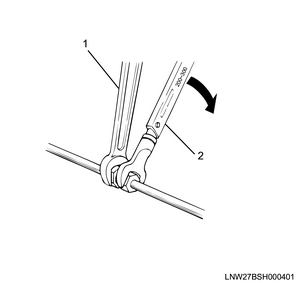
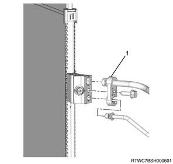
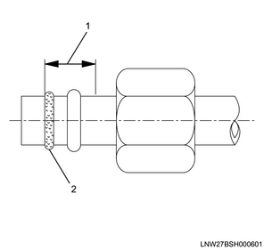
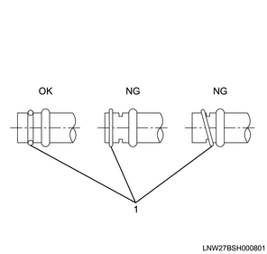
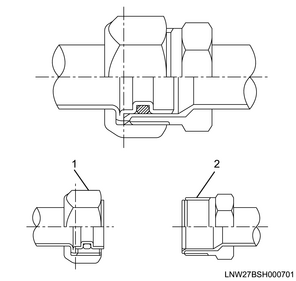

Caution
Refrigerant leakage repair and refrigerant pipe connection
Be sure to install a new O-ring when connecting the removed refrigerant pipe. When removing or connecting the piping, use a backup wrench to prevent the connection from being twisted or damaged.

When connecting the refrigerant pipe at the block joint section, fit the convex section of the joint section firmly into the connection hole of the unit and secure it with a bolt.

Apply compressor oil to the O-ring before connecting.
Since compressor oil is different depending on the compressor type, be sure to use the compressor oil that matches the compressor type.

Securely insert the O-ring into the groove of the refrigerant pipe.

Insert the pipe into the union. First tighten the nut with your hand as much as possible. Then, tighten the nut to the specified torque.

Leakage at the refrigerant pipe connection
Check the torque of the connecting parts for the refrigerant pipe, and tighten them to the specified torque if they are loose. When doing so, use a backup wrench to prevent the piping from becoming twisted or damaged. Also, do not over-tighten.
Inspect for leakage from the connecting parts of the refrigerant pipe.
If leakage is found, drain the refrigerant from the A/C system.
Inspect the O-ring and replace it if necessary. In this case, do not reuse the O-ring. Be sure to replace it with a new one.
Be sure to apply compressor oil to the new O-ring before connecting.
Tighten the connecting parts of the refrigerant pipe to the specified torque. Use a backup wrench to prevent the piping from becoming twisted or damaged.
Perform vacuuming, fill the refrigerant and check the A/C system.
Leakage from the hose
When refrigerant is leaking from the inlet or outlet side hose of the compressor, replace the entire hose. Do not cut the hose or connect hoses.
Locate the area where refrigerant is leaking.
Drain the refrigerant.
Remove the hose assembly. After disconnecting the hose, put a cap or a cover on the connection to prevent foreign material from entering the A/C cycle.
Install a new hose assembly on the compressor. Tighten the connecting parts of the hose to the specified torque.
Perform vacuuming, fill the refrigerant and check the A/C system.
Leakage from the compressor
When compressor oil is leaking from the shaft seal or the shell, etc. of the compressor, replace the compressor assembly.
Handling of the refrigerant
The refrigerant circulates in the A/C system. It is a chemical product which requires special handling procedures in order to prevent accidents caused by mishandling.
When installing/removing or replacing the A/C cycle parts, be sure to wear goggles and put a cap or a cover on the connection of the refrigerant pipe or the unit.
Perform the work in a well ventilated area. Do not perform welding or steam cleaning on the A/C piping or unit installed in a vehicle.
If you get the refrigerant on your body, wash with water and seek medical treatment.
When there is a need to move the refrigerant from a large container to a small one, do not fill the container all the way. Take the expansion of the refrigerant into consideration and be sure to secure room for it in the container.
Store the refrigerant container at a temperature of 40 °C {104 °F} or lower.